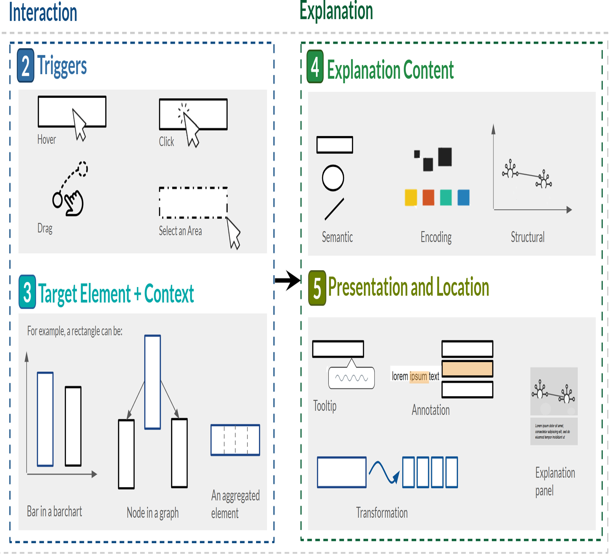
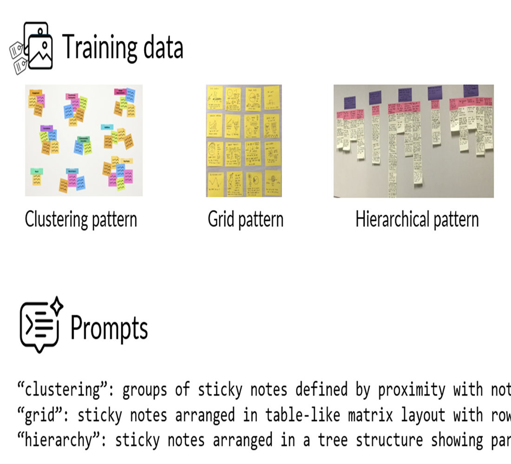
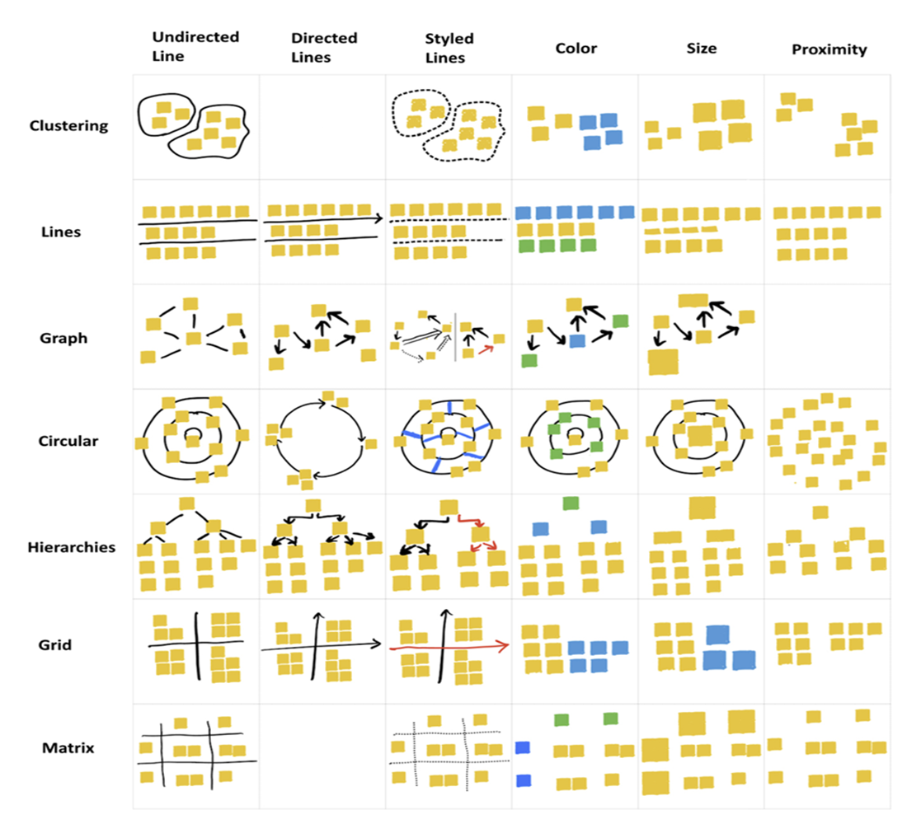
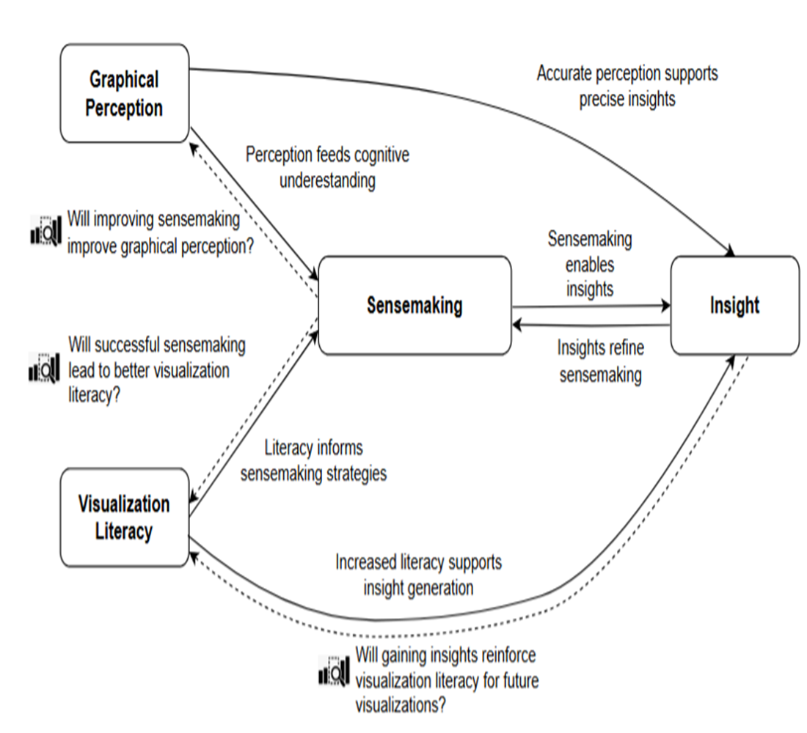
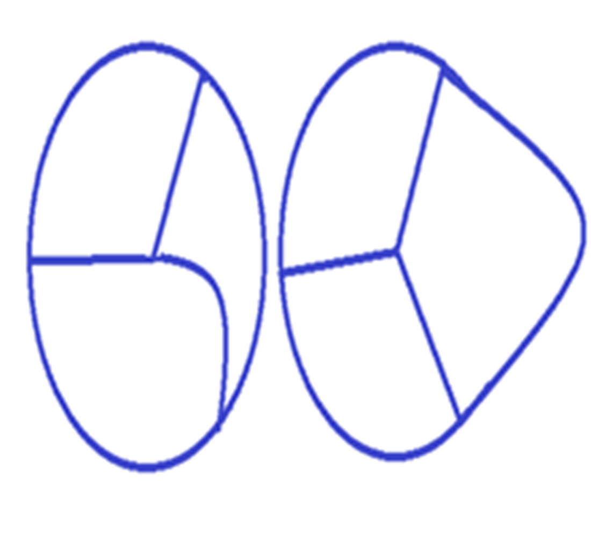
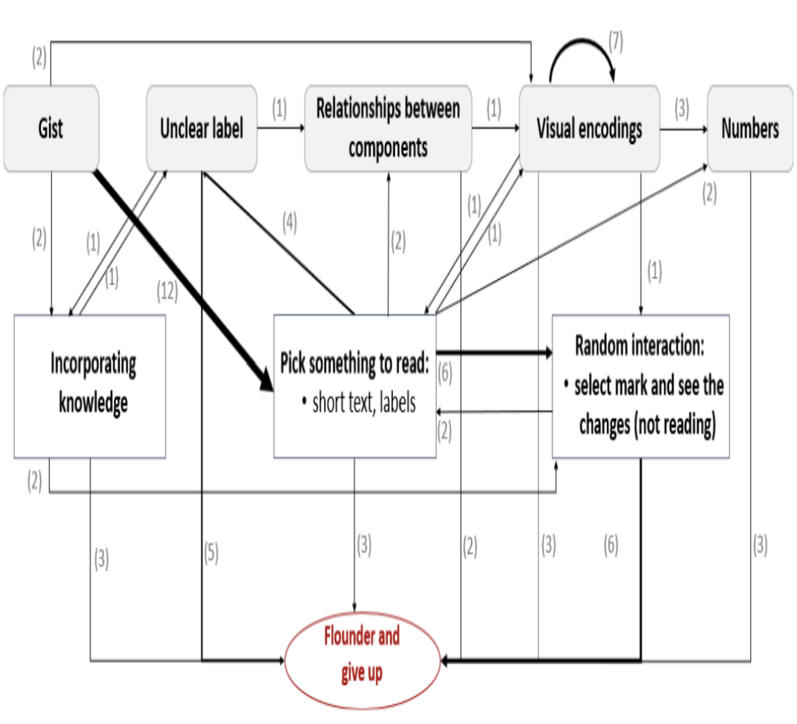

Publications

Serendipitous Explanations: Interaction-Triggered Comprehension Aids in Visualization
EuroVis, 2026

Toward Machine-Interpretable Spatial Organization Patterns: Learning from Creativity Traces
Herding CATs: Making Sense of Creative Activity Traces workshop @ CHI, 2026

Studying Visual Evidence from Using Physical Space to Think
Proceedings of the ACM on Human-Computer Interaction (PACMHCI), Vol. 9, No. 8, Article ISS011, 23 pages, 2025

Exploring Emerging Opportunities in Visualization Comprehension Research
Graphics Interface (GI), 2025

Encoding Future Intent Through Pulling Interactions in Input Visualizations
InputVis Workshop at IEEE VIS, 2025

Struggles and Strategies in Understanding Information Visualizations
IEEE Transactions on Visualization and Computer Graphics (TVCG), 2024

Summary of the Workshop on Interactions for Supporting Explanations and Promoting Comprehension
Proceedings of the 2024 Conference on Interactive Surfaces and Spaces (ISS Companion '24)

Supporting Exploration of Women’s Print History Project Data via Interactively Constructing Networks of Interest
Proceedings of the 2024 International Conference on Advanced Visual Interfaces (AVI '24)

The Effect of Room Complexity on Physical Object Selection Performance in 3-D Mobile User Interfaces
IEEE Transactions on Human-Machine Systems, 2020

Let me Join Two Worlds! Analyzing the Integration of Web and Native Technologies in Hybrid Mobile Apps
2018 IEEE International Conference on Trust, Security and Privacy in Computing and Communications (TrustCom/BigDataSE)